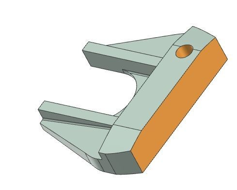
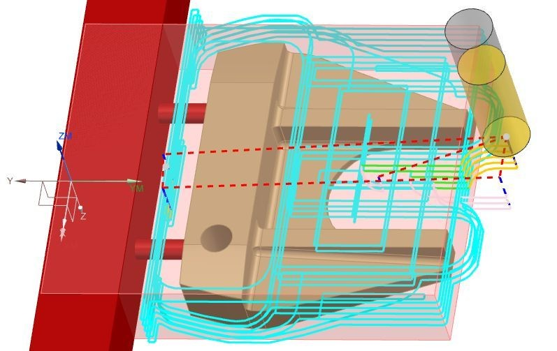
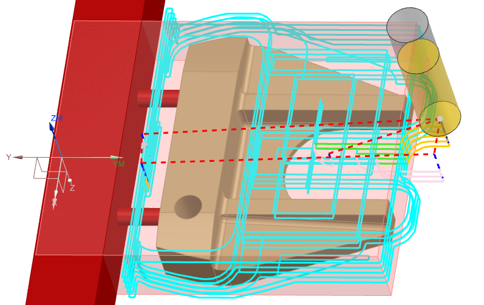
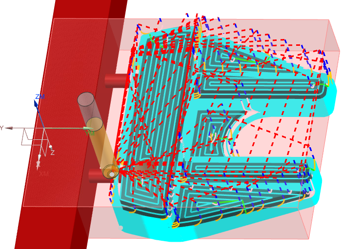
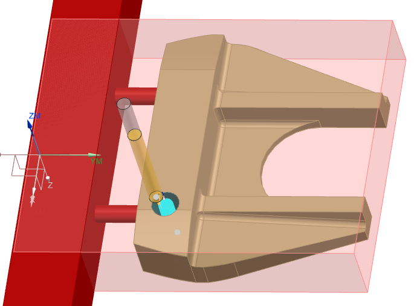

Project Overview
For MFGE 413 at Oregon State University, I developed a manufacturing plan for a CNC-machined putter head: tooling selection, workholding, Siemens NX CAM programming, and process-cost estimation. The starting putter geometry came from a GrabCAD reference model; my contribution centered on the manufacturing workflow.
Design & Production Targets
- Material: 6061 Aluminum Alloy
- Machine: DMG MORI DMU 40 (5-axis CNC mill)
- Software: Siemens NX (CAD/CAM)
- Planning Target: ~90 minutes total processing per part
- Annual Output: 1,300 parts/year (5/day × 260 working days)
- Sale Price: $350 per part
- Fixturing: Compact milling-machine vise + 2 tubes connected to leftover blank
Tooling
- Flat End Mill — 3/4 in (Roughing, 15,000 RPM)
- Bull-Nose End Mill — 3/8 in, 0.04 in corner radius (Surface Mill, 15,000 RPM)
- Ball End Mill — 1/8 in (Surface Mill, 15,000 RPM)
- Hole End Mill — 1/4 in (Hole Mill, 15,000 RPM)

Machining Operations



Process illustration using my report images—not an NX simulation or exact toolpath playback. Geometry, cutter travel, and playback speed are simplified; the three stages summarize operations, not the full machining program.
- Roughing Mill (Bottom) — 2 min 14 sec
- Area Mill (Bottom) — 1 min 5 sec
- Roughing Mill (Top) — 2 min 11 sec
- Area Mill (Top) — 5 min 54 sec
- Area Mill Surface (Top) — 8 min 4 sec
- Hole (Top) — 25 sec
The listed CAM operations total approximately 20 minutes. The detailed plan estimates approximately 84 minutes including pre- and post-processing, against a rounded 90-minute planning target. These are estimates, not measured shop-floor cycle times.
Manufacturing Cost Study
The course model distributed an assumed machine purchase over 1-, 3-, and 5-year amortization horizons. Its per-part estimates depend on planned utilization, labor, overhead, and sales assumptions—not observed production performance.
| Amortization Horizon | Reported Cost/Part |
|---|---|
| 1 Year | ≈$430 |
| 3 Year | ≈$230 |
| 5 Year | ≈$190 |
Sustainability
- Considerations: Recyclable aluminum, material choice, transportation, and potential local employment
- Trade-Offs: CNC energy consumption, manufacturing emissions, and noise
Production volumes, sale price, and financial results are planning estimates from the course project, not realized sales.